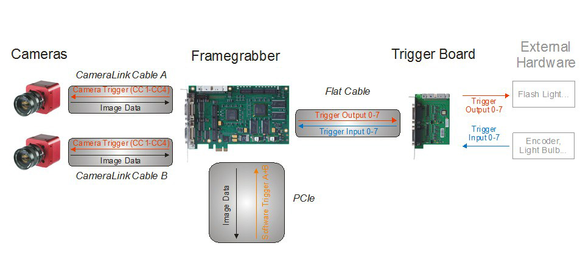
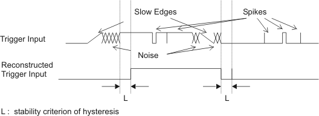
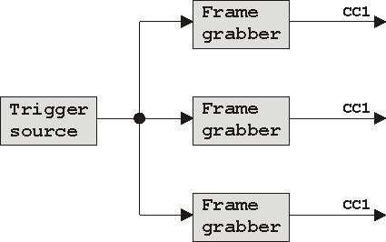
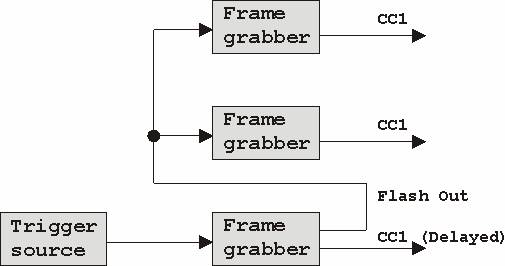
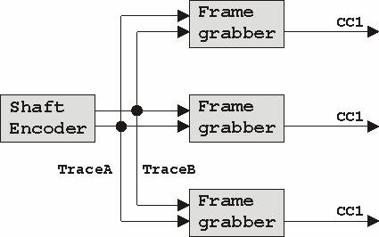
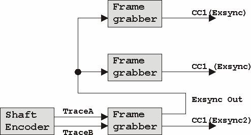
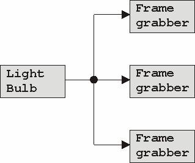
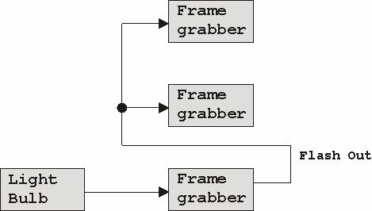

| . |
The microEnable Trigger System
Contents
2 Using the Trigger System with Camera Link, LVDS, and CoaXPress Frame Grabbers
Related documents
The Trigger Modes for Line Scan Cameras (AcquisitionApplets on microEnable Camera Link, LVDS, and CoaXPress Frame Grabbers)
Shaft Encoder / Hook Functionality
1 Introduction and Overview
With the trigger system, you are able to control the image acquisition process of your microEnable IV or microEnable 5 frame grabber with respect to external events. Thus, you can, for example, acquire an image at a particular moment, define when to accept an image delivered by the camera, or specify how many lines should be acquired.
Silicon Software frame grabbers are equipped with a powerful and flexible trigger function block.
You can choose between different physical I/O options (e.g., TTL signals, opto-coupled, ...). For each option, an according trigger board is available.
2 Using the Trigger System with Camera Link, LVDS, and CoaXPress Frame Grabbers
2.1 Overview
Figure 1 gives an overview over the signals involved. There are 10 different input signals available to the trigger system (trigger input 0-7 and software trigger A+B). The external trigger inputs are connected to the frame grabber via trigger board. There are different types of trigger boards available: Opto Trigger Boards and TTL Trigger Boards.
The frame grabber generates the desired trigger outputs and control signals from input events. Furthermore, the GrabberControlled mode offers an on-board generated trigger signal. The camera control signals, e.g., Exsync, are routed to the camera via Camera Link's "CC signal".
Additionally, the generated trigger outputs are also available at the trigger board for flash lights, synchronizing, or debugging.
LVDS: Please note that all trigger board functions are available for LVDS frame grabbers as well. However, LVDS frame grabbers only use one camera control signal (CC1) per camera.

Figure 1: Overview of the microEnable trigger system
2.2 Applet Trigger Function Blocks
This chapter describes the trigger functionality of the AquisitionApplets available for all Camera Link, LVDS, and CoaXPress frame grabbers.
AcquisitionApplets and Advanced AcquisitionApplets contain standardized trigger function blocks. Detailled information on trigger function blocks in AcquisitionApplets can be found directly in this section.
Details on the functionality of the trigger function block in Advanced AcquisitionApplets can be found in the according Applet documentation for Advanced AcquisitionApplets.
Custom trigger functions can be programmed with VisualApplets. For details, refer to the VisualApplets documentation.
The specific trigger implementation in SmartApplets covers an application-specific functionality, i.e., an application specific trigger function block. Please refer to the according SmartApplets documentation. If SmartApplets are installed on your system, you find the according documenation here.
Input Signals
The trigger system can be connected to external trigger input signals through a trigger board. Additionally, two software-generated signals, Software Trigger A and B, are available. The input signals are used by the trigger system to generate the trigger output.
The interpretation of the external input signal depends on the used trigger system (area or line scan) and its configuration. A typical setup for area scan systems is to use one single trigger input to trigger the acquisition of frames by the camera. A typical setup for line scan systems is to use one trigger input to trigger the acquisition of lines by the camera, and to use a second trigger input to define the grouping of these lines into images. For dual camera mode, the usage of trigger input signals is doubled, therefore a dual line applet may need independend trigger input signals which are supported by the Silicon Software frame grabber's trigger system.
By default, the trigger input signals are high-active. Using the same trigger input signal for both ports in case of a dual camera applet guarantees a synchronized operation of both cameras. The following chart describes the default signal assignment:
|
Default pinning
|
Area Trigger
|
Line Trigger
|
||
|
Single Camera Applet
|
Dual Camera Applet
|
Single Camera Applet
|
Dual Camera Applet
|
|
|
Image trigger 0
|
Trigger Input 0 | Trigger Input 0 | Trigger Input 0 | Trigger Input 0 |
|
Image trigger 1
|
na | Trigger Input 0 | na | Trigger Input 0 |
|
Line trigger 0
|
na | na | Trigger Input 1 | Trigger Input 1 |
|
Line trigger 1
|
na | na | na | Trigger Input 1 |
|
Table 1: Default assignment of the trigger input signals
|
||||
Input Hysteresis
In practice, an ideal trigger input signal can't be guaranteed in many cases. Transfer over long cables and operation in badly sheltered surroundings can influence the signal quality. Typical problems are strong flattening of the signal flanks, occurring interferences during toggling, and inducing of short jamming pulses (spikes).
|  |
| Figure 2: Trigger input signal reconstruction |
The AcquisitionApplets for the microEnable IV and microEnable 5 frame grabbers have safeguards to work highly reliable also in problematic signal environments. The applets work with an integrated hysteresis which accepts a signal edge until it is constant for a term (approx. 117ns). Hereby, the trigger input of the frame grabber is insensitive to jamming pulses which are usually short-lived. Multiple triggering (which may occur with slow signal transfers, circuit disturbances and bouncing) is also effectively disabled.
Output Signals
The AcquisitionApplet generates the trigger output signals Exsync and Flash. The Exsync is the camera control signal and synchronizes the camera to an external trigger input. In case of area scan cameras, the camera responses to an Exsync by recording a whole frame. In case of line scan cameras, the response is one line. The Flash output signal can be used to start an external flash light or synchonize other devices (e.g., another frame grabber) to the image acquisition process.
The area scan feature supports the output of HD-Sync -- the time base of the trigger subsystem. The line scan feature supports a second, delayable Exsync, the Exsync2 output signal.
By default, all output signals are low-active.
Exsync and Flash can be delayed seperately with respect to the according trigger input signal. Therefore, it is possible to adjust the signal generation to the individual latencies of the connected devices.
Many cameras allow the definition of the exposure time by the Exsync signal, e.g., for a low-active Exsync the falling edge of the Exsync opens the shutter and the rising edge closes the shutter and starts the transfer of the image data. The Silicon Software frame grabber's Exsync generator supports this feature in all trigger modes (except free-run).
Pinning of Camera Link CC Signals
The Camera Link standard specifies four camera control signals (CC signals) per port which can be used by the frame grabber for controlling the camera.
Each CC signal can be attached to any signal from the following list:
|
Area Applets
|
Line Applets
|
| ExSync (Image Trigger) | ExSync (Line Trigger, undelayed) |
| HD-Sync | ExSync2 (Line Trigger, delayed) |
| Flash | Flash |
| Clk | Clk |
| Vcc | Vcc |
| Gnd | Gnd |
|
Table: Assignment options for the CC signals. All signals can be inverted to meet the camera's specification of low-active or high-active control signals.
|
|
|
Port A
|
Port B
|
|
|
CC1
|
ExSync | ExSync |
|
CC2
|
Vcc | Vcc |
|
CC3
|
Vcc | Vcc |
|
CC4
|
Vcc | Vcc |
|
Table: Default pinning of CC signals
|
||
Digital I/O
The trigger input signals, as well as two of the trigger output signals of the AcquisitionApplets, are available at the trigger board as so-called digital I/Os.
The two output signals Digital-Out Bit 0 and Digital-Out Bit 1 are freely programmable by the user. They are available at the trigger board's connectors and allow to control external devices by software.
The Digital-In signals are the trigger input signals. The digital form allows to monitor the trigger input signals by software.
2.3 Multi-Board Triggering and Synchronization
This chapter describes how to synchronize multiple frame grabbers (residing in the same or in different PCs) to the same trigger signal.
If the frame grabbers are residing in the same PC, the frame grabbers can be connected by a special flat cable which is offered by Silicon Software. Please refer to the section "Multi board usage/Connection to frame grabber " within the Opto Trigger / TTL Trigger documentation.
Synchronizing the Trigger for Area Scan Setup
The easiest way to synchronization is to connect the inputs of the frame grabbers to the same trigger source and to set the mode to “External Trigger”
For synchronising two Camera Link Base cameras connected to port A and port B of a grabber using a Dual Applet, the same trigger input can be used.

An alternative is to define the first frame grabber as master frame grabber and to use the Flash out signal (which can, e.g., be derived from an external trigger signal) to trigger all other frame grabbers. To compensate the signal delay between the master CC1 and the CC1 of the slaves, an ExSync delay parameter at the master is used to delay the CC1 of the master only.
This configuration can also be used with a software trigger source, or, in grabber-controlled mode at the master, for synchronizing the slaves.

Synchronizing the Line Trigger for a Line Scan Setup
The easiest way to synchronization is to connect the inputs of the frame grabbers to the same encoder source and to set the mode to “External Trigger”
For synchronising two Camera Link Base cameras connected to port A and port B of a grabber using a Dual Applet, the same input can be used.

An alternative is to define the first frame grabber as master frame grabber and to use the ExSync out signal to trigger all other frame grabbers as slaves. To compensate the signal delay between the master CC1 and the CC1 of the slaves, an delayed ExSync2 signal is mapped to CC1 of the master.
This configuration can also be used in grabber-controlled mode at the master for syncronising the slaves.

Synchronizing the Image Trigger for a Line Scan Setup
The easiest way to synchronization is to connect the inputs of the frame grabbers to the same light bulb source and to set the mode to “Trigger”
For synchronising two Camera Link Base cameras connected to port A and port B of a grabber using a Dual Applet, the same input can be used.

An alternative is to define the first frame grabber as master frame grabber and to use the Flash out signal to trigger all other frame grabbers as slaves. To compensate the signal delay between the master CC1 and the CC1 of the slaves, an delayed ExSync2 signal is mapped to the CC1 of the master.
Remark: This configuration works only with image trigger mode "Triggered" and if there is no Flash required.

3 Using the Trigger System with GigE VISION Frame Grabbers
The GigE Vision AquisitionApplets provide pure digital I/O as trigger I/O which can be used by the SDK only. The SDK parameters for get/set the status is defined as FG_DIGIO_INPUT and FG_DIGIO_OUTPUT and can be used by the SDK function Fg_getParameter() or Fg_setParameter.
In VisualApplets, the trigger I/O can be programmed with great flexibility, using the operators of the Signal library.
4 Trigger Boards (TTL and Opto-Decoupled)
All microEnable frame grabber boards are equiped with a 34 pin flat cable connector. This is the physical trigger interface where the I/O TTL board or the I/O Opto board is connected. The I/O TTL board provides an adaption to the TTL signal level, while the IO-Opto board provides a galvanic isolation and adaption to the industrial signal level (typically 5 V - 24 V).
For details, refer to the according documentation: Opto Trigger Boards and TTL Trigger Boards.
5 Using Trigger I/O as Control Channels - Opportunities with VisualApplets
The trigger input signals and the trigger output signals that are available at the trigger board are called digital I/Os.
The two output signals Digital-Out Bit 0 and Digital-Out Bit 1 are freely programmable by the user. They are available at the trigger board connectors and allow to control external devices by software.
The eight Digital-In signals are the four trigger inputs. They allow to monitor the trigger input signals by software.
With the parameters FG_DIGIO_INPUT/FG_DIGIO_OUTPUT you get/set a bitmask for the input/output pins by Fg_getParameter()/Fg_setParameter().
For the input you get a value between 0 and 255 for the 8 input pins (8Bit^2).
For the output you set a value between 0 and 3 for the 2 output pins (2Bit^2).
In VisualApplets, the trigger I/O can be programmed with great flexibility, using the operators of the Signal library. This even allows to implement data tranfer protocols.
| Forward |